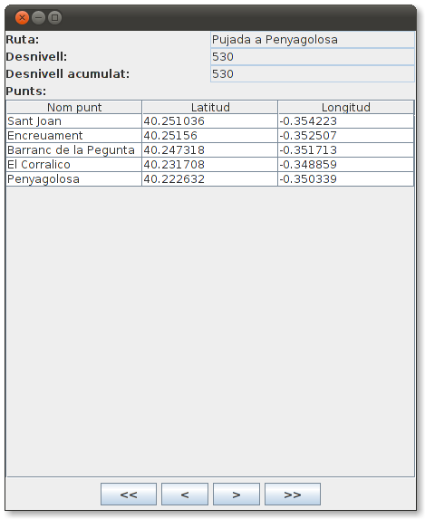
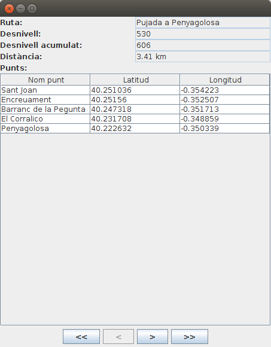
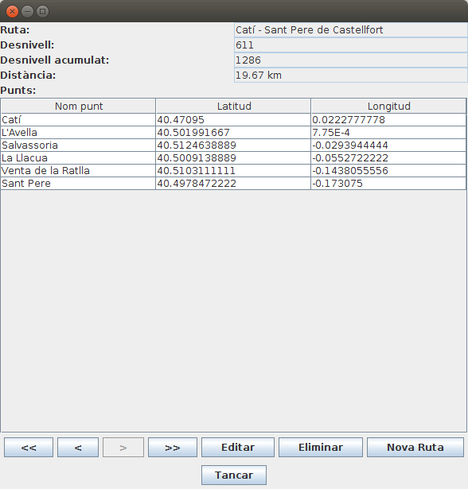

Exercicis
Exercici 6.1 (BDOR)
Des de la perspectiva Database Development d'Eclipse, o des de PgAdmin si el tens instal·lat, entrant com a usuari rxx en la Base de Dades rxx:
- Crea un tipus de dades anomenat coordenades, amb dos camps: lat (numèric) i lon (numèric).
- Crea un tipus de dades anomenat punt, amb tres camps; num_p (enter), nom_p (text) i coord (de tipus coordenades)
- Crea un taula anomenada ruta amb la seguent estructura: num_r (enter, clau principal), nom_r (text), desn (enter), desn_acum (enter), llista_punts (array de punt)
Exercici 6.2 (BDOR)
Crea un nou paquet anomenat Exercicis en el projecte Tema6_1. Inclou en el projecte les llibreries de JDBC per a PostgreSQL i per a SQLite, si no ho estan encara.
- Copia el paquet util.bd al projecte. Aquest paquet el vam fer en l'exercici Ex 4.4 i inclou les classes Coordenades.java, PuntGeo.java i Ruta.java. També inclou la classe GestionarRutesBD.java, que ens permetia gestionar la BD Rutes.sqlite
- Copia també la BD Rutes.sqlite, creada en exercicis anteriors, però que l'última actualització és del mateix exercici.
A partir d'aci comença realment l'exercici, que consistirà en passar les dades des de Rutes.sqlite fins la Base de Dades de PostgreSQL rxx, creada en l'exercici anterior, i posteriorment visualitzar-les, però de forma còmoda
- Crea la classe PassarRutaSqlitePostgresql.java, amb main() (és a dir, executable).
- Heu d'agafar totes les rutes de Rutes.sqlite i deixar-les en un ArrayList de Ruta amb el mètode ja creat de GestionarRutesBD.java anomenat llistat().
- Utilitzeu el mètode cadenaRuta(ruta) que us passarà el professor que torna una cadena de text amb totes les dades de la ruta, que es pot utilitzar en un INSERT (per exemple el podeu col·locar en la mateixa classe PassarRutaSQLitePostgresql). Us recomane vivament que primer tragueu per pantalla la sentència INSERT abans d'executar-la. Observeu que cadenaRuta() no torna el número de la ruta.
- Inseriu totes les rutes en la BD de PostgreSQL rxx.
- Crea la classe VisRutaPostgreSQL, amb main() (és a dir, executable) que visualitze les rutes amb el següent format. Observa que sí que agafem element a element de la llista de punts, però després no intentem separar el contingut ni dels elements de tipus punt, ni molt menys dels de tipus coordenades.
Ruta número 1: Pujada a Penyagolosa
Punts:
(1,"Sant Joan","(40.251036,-0.354223)")
(2,Encreuament,"(40.25156,-0.352507)")
(3,"Barranc de la Pegunta","(40.247318,-0.351713)")
(4,"El Corralico","(40.231708,-0.348859)")
(5,Penyagolosa,"(40.222632,-0.350339)")
Exercici 6.3 (BDOO)
Crea un nou paquet anomenat Exercicis en el projecte Tema6_2. Incorpora en el projecte el driver per a DB4O .
- Incorpora en ell el paquet util.bd, ja utilitzades en l'exercici anterior. En ell han d'estar les classes Coordenades.java, PuntGeo.java i Ruta.java.
- Assegura't que la classe Ruta.java tenen els mètodes getLlistaDePunts() i setLlistaDePunts(), (o similar) que tornen o tenen com a paràmetre un ArrayList de PuntGeo. En cas que no els tingues, crea'ls de la forma ràpida, i si encara tens dubtes, senzillament agafa el paquet util.bd que et proporciona el professor
- En el paquet ha d'estar també la classe GestionarRutesBD.java, que ens permetia gestionar la BD Rutes.sqlite.
- Copia també la BD Rutes.sqlite.
A partir d'aci comença realment l'exercici, que consistirà en passar les dades des de Rutes.sqlite fins la Base de Dades de DB4O Rutes.db4o.
- Crea la classe PassarRutaSqliteDB4O.java, amb main() (és a dir, executable).
- Has d'agafar totes les rutes de Rutes.sqlite i deixar-les en un ArrayList de Ruta amb el mètode ja creat de GestionarRutesBD.java anomenat llistat().
- Insereix totes les rutes en la BD Rutes.db4o.
- Tanca la connexió.
- Crea la classe VisRutaDB4O.java, amb main() (és a dir, executable), que ha de connectar a la Base de Dades Rutes.db4o , ha de llegir totes les rutes (ves amb compte, perquè només has de llegir rutes; s'han guardat més objectes: punts i coordenades) i ha de traure per pantalla el nom de la ruta i el número de punts.

Exercici 6.4 (BDOO)
En el mateix projecte i paquet anem a fer una aplicació amb interfície pràctica. De moment tindrà aquest aspecte:

en el qual, a banda de les etiquetes (JLabel) i quadres de text (JTextField) tenim una taula (JTable) on col·locarem tots els punts de la ruta (nom, latitud i longitud). Tots els controls són no editables, per a no poder introduir cap informació.
Haureu de tenir una clase Main com la següent:
public static void main(String[] args) {
Rutes_DB4O_pantalla finestra = new Rutes_DB4O_pantalla();
finestra.iniciar();
}
}
I la classe Pantalla, que és realment és on es fa la feina. Us passe l'esquelet, amb la inclusió de tots els controls. Per cert, els controls estan deshabilitats per a no poder modificar les dades. Teniu ja construït un mètode anomenat plenarTaula() que accepta un paràmetre de tipus ArrayList<PuntGeo>, i s'encarrega de plenar correctament la taula
import java.awt.FlowLayout;
import java.awt.GridLayout;
import java.awt.event.ActionEvent;
import java.awt.event.ActionListener;
import java.util.ArrayList;
import javax.swing.BoxLayout;
import javax.swing.JButton;
import javax.swing.JFrame;
import javax.swing.JLabel;
import javax.swing.JPanel;
import javax.swing.JScrollPane;
import javax.swing.JTextField;
import javax.swing.JTable;
import com.db4o.Db4oEmbedded;
import com.db4o.ObjectContainer;
import com.db4o.ObjectSet;
import util.bd.PuntGeo;
import util.bd.Ruta;
public class Rutes_DB4O_pantalla extends JFrame implements ActionListener {
private static final long serialVersionUID = 1L;
ArrayList<Ruta> llista = new ArrayList<Ruta>();
int num_actual;
JLabel etiqueta = new JLabel("");
JLabel etNom = new JLabel("Ruta:");
JTextField qNom = new JTextField(15);
JLabel etDesn = new JLabel("Desnivell:");
JTextField qDesn = new JTextField(5);
JLabel etDesnAcum = new JLabel("Desnivell acumulat:");
JTextField qDesnAcum = new JTextField(5);
JLabel etPunts = new JLabel("Punts:");
JTable punts = new JTable(1,3);
JButton primer = new JButton(" << ");
JButton anterior = new JButton(" < ");
JButton seguent = new JButton(" > ");
JButton ultim = new JButton(" >> ");
// en iniciar posem un contenidor per als elements anteriors
public void iniciar() {
getContentPane().setLayout(new GridLayout(0,1));
JPanel p_prin = new JPanel();
p_prin.setLayout(new BoxLayout(p_prin, BoxLayout.Y_AXIS));
// contenidor per als elements
JPanel panell1 = new JPanel(new GridLayout(0,2));
panell1.add(etNom);
qNom.setEditable(false);
panell1.add(qNom);
panell1.add(etDesn);
qDesn.setEditable(false);
panell1.add(qDesn);
panell1.add(etDesnAcum);
qDesnAcum.setEditable(false);
panell1.add(qDesnAcum);
panell1.add(etPunts);
JPanel panell2 = new JPanel(new GridLayout(0,1));
punts.setEnabled(false);
JScrollPane scroll = new JScrollPane(punts);
panell2.add(scroll, null);
JPanel panell5 = new JPanel(new FlowLayout());
panell5.add(primer);
panell5.add(anterior);
panell5.add(seguent);
panell5.add(ultim);
getContentPane().add(p_prin);
p_prin.add(panell1);
p_prin.add(panell2);
p_prin.add(panell5);
setVisible(true);
pack();
primer.addActionListener(this);
anterior.addActionListener(this);
seguent.addActionListener(this);
ultim.addActionListener(this);
inicialitzar();
VisRuta();
}
private void plenarTaula(ArrayList<PuntGeo> ll_punts){
Object[][] ll= new Object[ll_punts.size()][3];
for (int i=0;i<ll_punts.size();i++){
ll[i][0]=ll_punts.get(i).getNom();
ll[i][1]=ll_punts.get(i).getLatitud();
ll[i][2]=ll_punts.get(i).getLongitud();
}
String[] caps = {"Nom punt","Latitud","Longitud"};
punts.setModel(new javax.swing.table.DefaultTableModel(ll,caps));
}
@Override
public void actionPerformed(ActionEvent e) {
}
private void inicialitzar() {
}
private void VisRuta(){
}
}
Vosaltres haureu de fer els 3 mètodes del final per a que apareguen les dades.
Exercici 6.5 (BDOO)
Modificar la classe anterior per a incorporar també la distància total de la ruta. Per a poder calcular-la ens ajudarem de d'una funció ja creada (que us passarà el professor) que calcula la distància en quilòmetres entre dos punts, donant les coordenades (latitud i longitud) dels dos punts: Dist(lat1,long1,lat2,long2). Podeu incorporar-la a la classe on esteu fent l'exercici (Rutes_DB4O_pantalla).
Aquest seria un exemple:

Exercici 6.6 (ampliació - voluntari)
Modifica l'aplicació anterior per a que es puguen modificar, esborrar i inserir les rutes.

- S'haurien de posar més botons: Editar, Eliminar i Nova Ruta.
- Estaria bé que en entrar a qualsevol de les opcions anteriors es desactivaren els botons de navegació, que desaparegueren els d'Editar, Eliminar i Nova Ruta, i que aparegueren els d'Acceptar i Cancel·lar.
- En tots els casos, si es cancel·la no es fa cap acció, però s'ha de tornar a l'estat anterior (primera imatge)
- EDITAR:
- S'han d'"activar" els controls per a poder modificar les dades.
- En cas d'acceptar s'ha de fer la modificació a partir del contingut de tots els controls (no cal detectar quins s'han modificat)
- En cas de cancel·lar, no es fa la modificació, i senzillament s'ha de tornar a visualitzar la ruta actual (com no s'ha fet cap canvi, apareixeran les dades anteriors)
- Per a afegir nous punts, es podria posar un botó per a afegir una nova línia al JTable, i un altre per a llevar una línia

- ELIMINAR:
- Si s'accepta, s'haurà d'esborrar la ruta, sinó tornar a visualitzar-la

- INSERIR:
- Haurà de mostrar tots els camps en blanc, i evidentment activats, per a poder introduir dades.
- En cas d'acceptar s'ha d'introduir la nova ruta.
- En cas de cancel·lar, estaria bé tornar a la que s'estava mostrant abans d'apretar el botó de nova ruta.
- Per a introduir nous punts, es podria posar un botó per a afegir una nova línia al JTable, i un altre per a llevar una línia

Nota
EL JTable de vegades és engorrós. Si s'està editant una casella, la informació no s'ha introduït encara, fins que no s'aprete enter, tab o amb el ratolí no s'aprete a algun altre lloc.Per a acabar la introducció de la informació que s'està editant, es podria executar el següent (per exemple quan s'ha apretat Acceptar):
if (punts.isEditing())
punts.getCellEditor().stopCellEditing();
on punts seria al JTable.
Llicenciat sota la Llicència Creative Commons Reconeixement NoComercial CompartirIgual 2.5